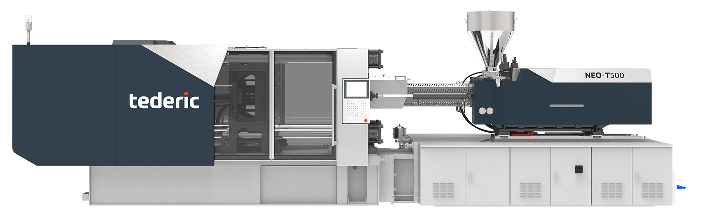
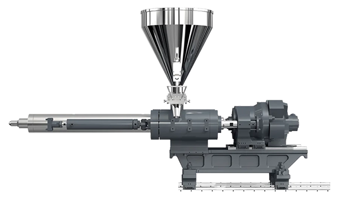
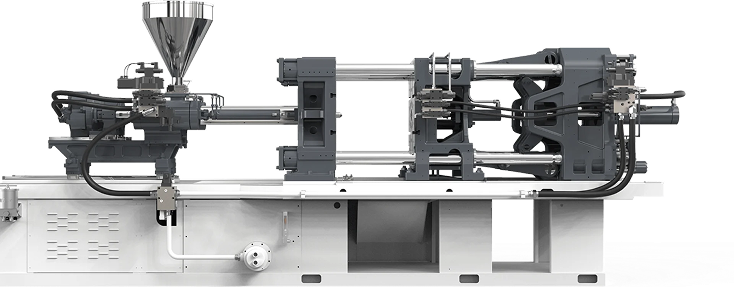
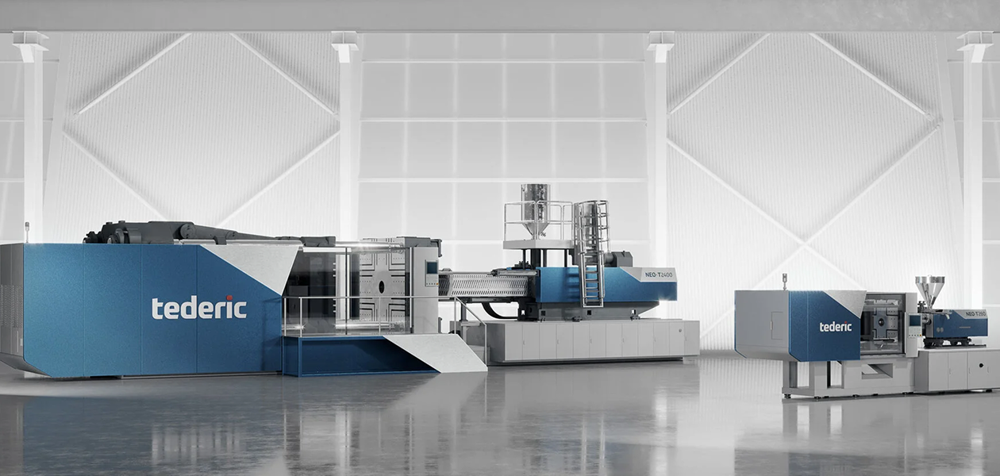

<!DOCTYPE html><html lang="en"></html><head><meta charset="UTF-8"><meta name="viewport" content="width=device-width, user-scalable=yes, minimum-scale=1.0, maximum-scale=2.0, initial-scale=1.0"><title>Tederic – інноваційні рішення для лиття пластмас під тиском</title><link rel="stylesheet" href="css/styles.css"><link rel="shortcut icon" href="/favicon.ico" type="image/x-icon">
<link rel="icon" href="/favicon.ico" type="image/x-icon">
<link rel="preconnect" href="https://fonts.googleapis.com">
<link rel="preconnect" href="https://fonts.gstatic.com" crossorigin>
<link href="https://fonts.googleapis.com/css2?family=Ubuntu+Sans:ital,wght@0,100..800;1,100..800&display=swap" rel="stylesheet"></head><body> <div class="dark-bgc"></div><div class="popup"><a class="cancel_popup" href="#"><svg xmlns="http://www.w3.org/2000/svg" width="18" height="18" viewBox="0 0 18 18" fill="none">
<path d="M0.75 16.75L16.75 0.75" stroke="#BDBDBD" stroke-width="1.5" stroke-linecap="round" stroke-linejoin="round"/>
<path d="M16.75 16.75L0.75 0.75" stroke="#BDBDBD" stroke-width="1.5" stroke-linecap="round" stroke-linejoin="round"/>
</svg> </a><div class="grid btn_popup_col"> <a class="manager switch_btn active" href="#" data-target="manager_block">Менеджер з продажу</a><a class="send_message switch_btn" href="#" data-target="form_send_message">Залишити заявку</a></div><div class="manager_block switch_block active" id="manager_block"><h3 class="page_h3">Зв’яжіться напряму з менеджером</h3><p>Наш менеджер з продажу готовий відповісти на всі ваші запитання щодо продукції, цін та умов співпраці.</p><div class="flex flex-center items-center gap_20"> <a href="tel:+380672953719">+38 067 295 37 19</a><a href="tel:+380501712415">+38 050 171 24 15</a></div></div><div class="form_send_message switch_block" id="form_send_message"><h3 class="page_h3 tac">Заповніть форму, і наш менеджер зателефонує вам</h3><form action="#"><div class="grid col_2 gap_20"> <p><label for="name">Імʼя<span>*</span></label><input id="name" type="text" name="userName" minlength="3" maxlength="30" required oninput="this.value = this.value.replace(/[^a-zA-Zа-яА-ЯїЇєЄіІґҐs]/g, '')"></p><p><label for="surname">Прізвище</label><input id="surname" type="text" name="userName" minlength="3" maxlength="30" required oninput="this.value = this.value.replace(/[^a-zA-Zа-яА-ЯїЇєЄіІґҐs]/g, '')"></p><p><label for="userPhone">Телефон<span>*</span></label><input class="phoneInput inputMask" type="tel" name="userPhone" required maxlength="13"><span class="error-tel"></span></p><p><label for="email">E-mail</label><input id="email" type="email" name="email" required></p></div><p><label for="textarea">Коментар</label><textarea id="textarea" name="textarea"></textarea></p><div class="flex flex-center items-center gap_20"> <button class="cta fill_cta">Відправити</button></div></form></div></div><header class="fixed_header dark_mode"><div class="wrapper_header flex-between header items-center"><div class="logo"> <a href="index.html"></a></div><nav class="navigation nav"><ul class="navigation_menu"><li class="cancel_li"><a class="cancel" href="#"><svg xmlns="http://www.w3.org/2000/svg" width="16" height="16" viewBox="0 0 16 16" fill="none">
<path d="M1 15L14.7071 1M15 15L1.29291 1" stroke="#fff" stroke-width="1.5" stroke-linecap="round"/>
</svg></a></li><li><a href="index.html">Головна</a></li><li><a href="info.html">Рішення під ключ</a></li><li><a href="services.html">Сервіс та гарантія</a></li><li><a href="catalogue.html">Термопластавтомати</a></li><li><a href="news.html">Новини</a></li><li><a href="contacts.html">Контакти</a></li><li class="mobile_btn"><div class="button"> <a class="cta connect_cta transparent_cta" href="#">Звʼязатися з нами</a></div></li></ul></nav><div class="button desctop_btn"> <a class="cta connect_cta transparent_cta" href="#">Звʼязатися з нами</a></div><div class="burger"> <span class="bord b1"></span><span class="bord b2"></span><span class="bord b3"></span></div></div></header><main class="product_container_page"><section class="product_main_section"><div class="main_product_block wrapper animate fade-up" data-delay="200"><p>Коліно-важільні термопластавтомати</p><h1 class="page_h2 dot_svg">ТПА з колінно-важільний вузл змикання Tederic NEO <svg xmlns="http://www.w3.org/2000/svg" width="10rem" height="10rem" viewBox="0 0 10 10" fill="none">
<circle cx="5" cy="5" r="5" fill="#ED6B27"/>
</svg> T</h1></div><div class="description_product items-center gap_100"><div class="main_image animate fade-right" data-delay="400"> <picture> </picture></div><div class="wrapper items-center animate fade-left" data-delay="400"><div class="text_descr"><div class="grid col_2_product col_2 items-center gap_30"><p class="text_product">Зусилля змикання </p><p class="descr">900 - 10 500 kN</p><p class="text_product">Об’єм упорскування</p><p class="descr">168 - 6220 см³</p><p class="text_product">Відстань між колонами</p><p class="descr">360×360 - 1160×1160</p></div><div class="button_container flex flex-center wrap_768 gap_20 animate fade-up" data-delay="300"><a class="cta connect_cta fill_cta" href="#">Дізнатися вартість</a><a class="cta transparent_cta" href="catalogue.html">Скачати брошуру </a></div></div></div></div><div class="wrapper animate fade-up" data-delay="500"><h2 class="page_h2 dot_svg">Серія ТПА Tederic NEO <svg xmlns="http://www.w3.org/2000/svg" width="10" height="10" viewBox="0 0 10 10" fill="none">
<circle cx="5" cy="5" r="5" fill="#ED6B27"/>
</svg> T з колінно-важелевим вузлом змикання: <span class="tiny_text">елегантність та продуктивність у кожній деталі.</span></h2></div></section><section class="table_container animate fade-up" data-delay="200"> <div class="wrapper"> <h2 class="page_h2">Модельний ряд</h2><div class="table_block"><table> <thead> <tr> <th>Модель</th><th>Зусилля змикання</th><th>Обʼєм вприскування, см<sup>3</sup></th><th>Відстань між колонами, мм</th></tr></thead><tbody> <tr><td>NEO·T90</td><td>900</td><td>168 - 243</td><td>360×360</td></tr><tr><td>NEO·T120</td><td>1200</td><td>222 - 310</td><td>410×410</td></tr><tr><td>NEO·T160</td><td>1600</td><td>312 - 442</td><td>470×470</td></tr><tr><td>NEO·T200</td><td>2000</td><td>374 - 558</td><td>530×530</td></tr><tr><td>NEO·T260</td><td>2600</td><td>522 - 752</td><td>610×570</td></tr><tr><td>NEO·T320</td><td>3200</td><td>845 - 1 151</td><td>710×670</td></tr><tr><td>NEO·T400</td><td>4000</td><td>1 161 - 1 546</td><td>760×710</td></tr><tr><td>NEO·T500</td><td>5000</td><td>1 785 - 2 293</td><td>820×820</td></tr><tr><td>NEO·T600</td><td>6000</td><td>2242-2837</td><td>880*880</td></tr><tr><td>NEO·T700</td><td>7000</td><td>2684-3715</td><td>960*960</td></tr><tr><td>NEO·T800</td><td>8000</td><td>3276-4894</td><td>1020*1020</td></tr><tr><td>NEO·T1050</td><td>10500</td><td>4320-6220</td><td>1160*1160</td></tr></tbody></table></div></div></section><section class="info_product_container"> <div class="wrapper"> <div class="description-info"> <div class="info-item animate fade-left" data-delay="200"><a class="readmore flex-between items-center" href="#"><div><p class="active_span">Серія NEO·T</p><h2 class="head_span">Вузол змикання</h2></div><span class="svg_btn"> <svg xmlns="http://www.w3.org/2000/svg" width="42" height="23" viewBox="0 0 42 23" fill="none">
<path d="M1 1L21 21L41 1" stroke="#BDBDBD" stroke-width="2" stroke-linecap="round"/>
</svg></span></a><div class="description-more"><div class="grid col_2 gap_100 items-center"><div class="prod_info_text"><p>Вузол змикання ТПА забезпечує точне позиціонування (≤1 мм).</p><p>Максимально допустима вага прес-форм збільшена на 15%, навантаження зменшено на 4%, що гарантує стабільність роботи та довговічність вузла змикання.</p></div><picture> </picture></div><div class="grid col_3 gap_20 adv_services"> <div class="advant_block animate fade-left" data-delay="400"><h3>Жорстка конструкція</h3><p>Перероблена структура колінно-важільного механізму дозволяє встановити прес-форми більшого розміру, збільшує жорсткість вузла змикання та зменшує довжину ТПА. Наприклад, для моделі NEO T260 довжина зменшується на 200 мм. </p></div><div class="advant_block animate fade-left" data-delay="400"><h3>Оптимізація конструкції масляного контуру відкривання та закривання прес-форми</h3><p>Покращення точності кінцевого положення відкривання та закривання прес-форми.</p></div><div class="advant_block animate fade-left" data-delay="400"><h3>Коробчаста структура вузла</h3><p>Перероблена структура зменшує деформації, покращує рівномірність розподілу тиску, оптимізує розташування колон і підвищує продуктивність.</p></div><div class="advant_block animate fade-left" data-delay="400"><h3>Стандартне кріплення для робота</h3><p>Стандартна схема отворів для кріплення робота Euromap.</p></div><div class="advant_block animate fade-left" data-delay="400"><h3>Змазка колінно - ричажного механізму</h3><p>Автоматична система мастила забезпечують простоту експлуатації.</p></div><div class="advant_block animate fade-left" data-delay="400"><h3>Змазка колінно - ричажного механізму</h3><p>Стандартна схема отворів для кріплення робота Euromap. Опори ковзання збільшені.</p></div></div></div></div><div class="info-item animate fade-left" data-delay="400"><a class="readmore flex-between items-center" href="#"> <div><p class="active_span">Серія NEO·T</p><h2 class="head_span">Вузол впорскування</h2></div><span class="svg_btn"> <svg xmlns="http://www.w3.org/2000/svg" width="42" height="23" viewBox="0 0 42 23" fill="none">
<path d="M1 1L21 21L41 1" stroke="#BDBDBD" stroke-width="2" stroke-linecap="round"/>
</svg></span></a><div class="description-more"><div class="grid col_2 gap_100 items-center"><div class="prod_info_text"><p>Вузол упорскування вирізняється високою точністю повторюваності упорскування (менше 0,5%), що гарантує стабільність і передбачуваність процесу.</p><p>Його модульна конструкція спрощує обслуговування, а суворий контроль температури матеріальної пари (≤±1 °C) сприяє стабільності операцій.</p><p>Швидкість упорскування збільшено на 15–30% для малих та на 5–10% для великих термопластавтоматів.</p></div><picture> </picture></div><div class="grid col_3 gap_20 adv_services"> <div class="advant_block animate fade-left" data-delay="400"><h3>Якісне пластифікування</h3><p>Пропорційний клапан проти­тиску забезпечує покращене пластифікування та якісну гомогенізацію розплаву.</p></div><div class="advant_block animate fade-left" data-delay="400"><h3>Економія енергії та часу</h3><p>Можливість використання електродвигуна попереднього пластифікування для економії енергії та скорочення часу циклу.</p></div><div class="advant_block animate fade-left" data-delay="400"><h3>Кастомізація для оптимального вирішення ваших завдань</h3><p>Можливість використання шнекових пар різної конфігурації для підвищення ефективності пластифікування залежно від виробничих завдань.</p></div><div class="advant_block animate fade-left" data-delay="400"><h3>Простота та зручність</h3><p>Поворотний вузол впорскування спрощує обслуговування.</p></div><div class="advant_block animate fade-left" data-delay="400"><h3>Надійне притискання сопла</h3><p>Подвійні циліндри каретки забезпечують точне вирівнювання сопла та допомагають уникнути витоку матеріалу.</p></div><div class="advant_block animate fade-left" data-delay="400"><h3>Плавний рух і точність</h3><p>Використовуються лінійні напрямні як для руху каретки, так і для впорскування, що забезпечує плавний рух та точність повторюваності ≤0,5%.</p></div></div></div></div><div class="info-item b_bottom animate fade-left" data-delay="600"><a class="readmore flex-between items-center" href="#"><div><p class="active_span">Серія NEO·T</p><h2 class="head_span">Електрика та гідравліка</h2></div><span class="svg_btn"> <svg xmlns="http://www.w3.org/2000/svg" width="42" height="23" viewBox="0 0 42 23" fill="none">
<path d="M1 1L21 21L41 1" stroke="#BDBDBD" stroke-width="2" stroke-linecap="round"/>
</svg></span></a><div class="description-more" id="spivpracia"><div class="grid col_2 gap_100 items-center"><div class="prod_info_text"><p>Надвисока швидкість реакції сервосистеми дозволяє досягти максимального тиску за 28 мс.</p><p>Сервопривід підвищеної потужності забезпечує гідравлічній системі ТПА високу продуктивність та покращену чутливість.</p></div><picture> </picture></div><div class="grid col_3 gap_20 adv_services flex-center"><div class="advant_block animate fade-left" data-delay="400"><h3>Якісне електронне оснащення</h3><p>Електричний щит із захистом від води та пилу оснащений високоякісними компонентами. Має розділення високовольтних та низьковольтних ланцюгів, що забезпечує надійність і простоту технічного обслуговування.</p></div><div class="advant_block animate fade-left" data-delay="400"><h3>Незварювальний трубопровід — більш чиста гідравлічна система</h3><p>Незварювальна трубопровідна система зменшує швидкість забруднення масла та запобігає можливим протіканням.</p></div><div class="advant_block animate fade-left" data-delay="400"><h3>Просунута система безпеки гідравліки</h3><p>Гідравлічний захист із визначенням позиції, захист РВД, захист прес-форми при низькому тиску, функція скидання тиску.</p></div></div><div class="grid col_2 adv_services gap_20 center_block"><div class="advant_block animate fade-left" data-delay="400"><h3>Спеціалізований контролер</h3><p>Спеціально розроблений для ТПА просунутий контролер для зручнішого керування. Підтримується віддалене підключення для допомоги та обслуговування.</p></div><div class="advant_block animate fade-left" data-delay="400"><h3>Додаткові опції для кастомізації</h3><p>Моніторинг зусилля замикання, захисна сигналізація системи виштовхування, керування системою гарячих каналів прес-форми.</p></div></div></div></div></div></div></section><section class="slider_section animate fade-up" data-delay="200"> <div class="wrapper"> <div class="slider_block_main"><div class="product_slider slider" id="mySlider"><div class="slider_container"><div class="slide_group"><picture class="slide_main"></picture><picture class="slide_main"></picture><picture class="slide_main"></picture></div></div><a class="prev" href="#"><svg xmlns="http://www.w3.org/2000/svg" viewBox="0 0 50 50" fill="none">
<circle cx="25" cy="25" r="25" transform="rotate(90 25 25)" fill="#ED6B27"/>
<path d="M29 15L19 25L29 35" stroke="#0F283D" stroke-width="3" stroke-linecap="round"/>
</svg></a><a class="next" href=""><svg xmlns="http://www.w3.org/2000/svg" viewBox="0 0 50 50" fill="none">
<circle cx="25" cy="25" r="25" transform="matrix(4.37114e-08 1 1 -4.37114e-08 0 2.18557e-06)" fill="#ED6B27"/>
<path d="M21 15L31 25L21 35" stroke="#0F283D" stroke-width="3" stroke-linecap="round"/>
</svg>  </a><div class="slide_buttons flex flex-center gap_20"></div></div></div></div></section></main><footer class="dark_mode footer"><div class="wrapper_header flex-between header items-center wrap_768 gap_20"><div class="logo"> <a href="index.html"></a></div><p class="copy">&copy 2025 Copyright by Gesplast.</p><p class="privacy"><a href="privacy.html">Політика конфіденційності</a></p></div></footer><script src="js/scripts.js"></script></body>